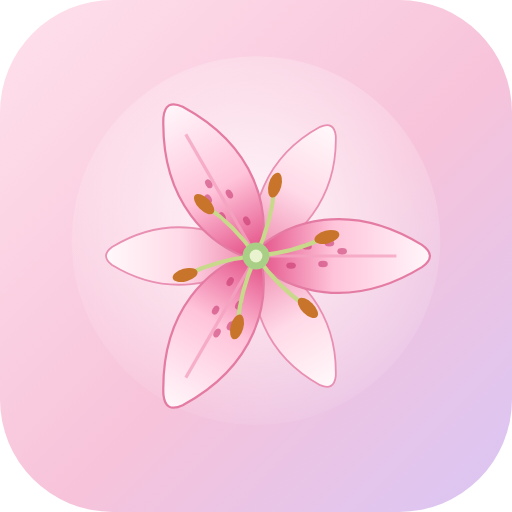

মাজেদার লাইব্রেরি
বইয়ের জন্য একটা ছোট্ট বাগান 🌷
মাজেদার লাইব্রেরি
📶 ইন্টারনেট ছাড়াও চলে
📱📱 দুই ফোনে একসাথে
🔒 তথ্য কখনো হারায় না
jarifalamclaude-max.github.io/MazedarLibrary
সব বই এক জায়গায়
লেখকের নামে ফোল্ডার, বাংলা বর্ণানুক্রমে সাজানো
হুমায়ূন আহমেদের হিসাব
সব বই পেতে আরো কয়টি লাগবে — সবসময় গুনে রাখে
নতুন বই পেলেই “পেয়েছি”
এক চাপে সংগ্রহে — বাকির সংখ্যা কমে যায়
Banglish-এও খোঁজা যায়
himu লিখলেই হিমু — বানান ভুলেও খুঁজে পায়
মলাট দেখালেই চিনে ফেলে
ক্যামেরা ধরুন — ইন্টারনেট ছাড়াও, বইমেলাতেও
দুই ফোনে, একই লাইব্রেরি
একজন যোগ করলে অন্যজনের ফোনে সাথে সাথে
রাতের জন্য গাঢ় রঙ
চোখে আরাম, লিলি ফুলের সাজ সবসময়